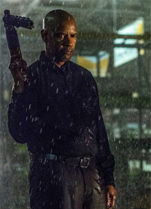

Дэнзел Вашингтон сыграет в экранизации "Макбета"

В Голливуде готовится очередная экранизация шекспировской классики. Как сообщает издание The Hollywood Reporter, в фильме по мотивам трагедии "Макбет" сыграют популярные актеры Дензел Вашингтон и Фрэнсис МакДорманд. Постановщиком назначен супруг актрисы Джоэл Коэн, он же подготовит сценарий картины. Съемочный и прокатный графики пока не утвержден.
Напомним, что сюжет пьесы, опубликованной в начале 17-го века, строится вокруг шотландского лорда, которому ведьмы предсказывают, что он может стать королем. Обуреваемый жаждой власти и подстрекаемый женой, он убивает короля, приехавшего к нему в замок и занимает трон. Естественно, ничем хорошим для него это не заканчивается.
Действие произведения неоднократно переносилось на большие экраны. Одна из самых известных экранизаций датируется 1948 годом, последняя на момент публикации данной заметки - 2015 годом. Главные роли в этом фильме исполнили Майкл Фассбендер, Шон Харрис, Марион Котийяр, Дэвид Тьюлис, Джек Рейнор и другие актеры.
Отметим, что Фрэнсис МакДорманд ранее доводилось играть Леди Макбет в театральных постановках.